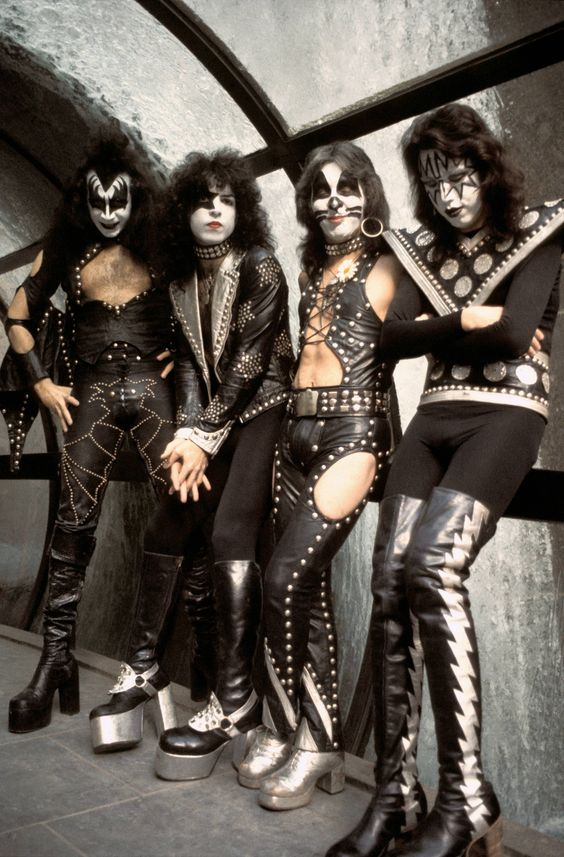
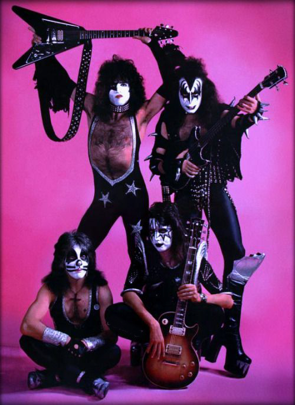
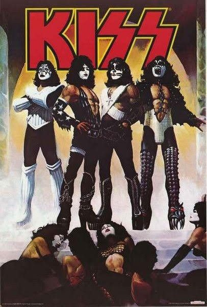

KISS
группа созданная в Нью-Йорке в начале 70-ых,
играющая в жанрах глэм-рок и хард-рок. В группе
часто сменялись участники, но отличительной
чертой всегда оставались макияжи, подобранные
для каждого лично.
подробнее об участниках в разделе "original members"


members
В первоначальный состав KISS вошли Пол Стэнли,
Джин Симмонс, Эйс Фрейли и Питер Крисс.
Состав начал распадаться в 1980-ых: за Питером
Криссом из группы ушел Эйс Фрейли. После чего в группе
неоднократно сменялись и новые участники. Оригинальный
состав воссоединялся в 1990-ых и продержался до 2002,
когда Эйс Фрейли снова решил покинуть группу,
на его место пришел другой участник,
однако он оставил сценический образ Эйса
и сейчас группа выступает в образах,
которые были при ее создании.
прослушайте альбомы KISS на странице "albums"
The starchild the demon
the spaceman and the cat
В оригинальном составе KISS у каждого
был свой образ.
Пол Стэнли стал the starchild, мальчиком звездой,
Джин Симмонс стал the demon, грозным демоном,
Эйс Фрейли стал the spaceman, или the Space Ace,
космическим асом, загадочным инопланетянином,
а Питер Крисс стал the cat, котом.
подробнее об участниках в разделе "original members"
